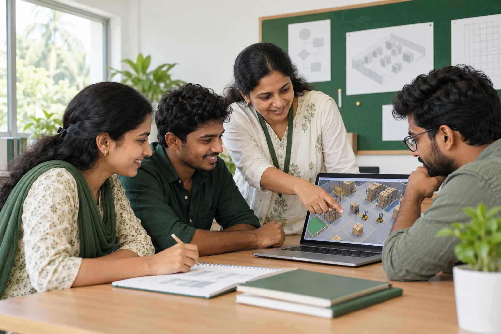

PRACTICAL EDUCATION. PURPOSEFUL FUTURES.
Where learning
takes root.
Build practical skills. Find your direction.
Grow into the professional you want to be.
your next step.03MONTHSFocused certifications06MONTHSPractical diplomas12MONTHSPGP programmes
WELCOME TO PINE ARBOR
Rooted in knowledge.
Growing careers.
Professional education that connects what you learn with how the world works.
Pine Arbor Educational Institution is based in Thiruvananthapuram, Kerala. Our journey begins with logistics and supply chain education, bringing together industry understanding, practical learning, and professional confidence.
Get to know Pine ArborFIND YOUR DIRECTION
Skills for a world
that keeps moving.

Logistics & supply chain
Understand the connections that keep business moving.
Explore programmesShipping
Explore the processes that connect trade across borders.
Explore programmesWarehouse & inventory
Discover the systems behind organised operations.
Explore programmesTHE PINE ARBOR APPROACH
More than knowing.
Learning by doing.
Workbooks, digital learning, and industry-based scenarios help turn new ideas into usable skills.
Real-world understanding
Explore the processes and decisions behind modern logistics.
Digital & simulation-based learning
Build confidence through practical exercises and technology-supported learning.
Professional confidence
Develop the knowledge and habits to take your next career step.
YOUR JOURNEY
From learning to possibility.
One step at a time.
With purpose at every stage.
- 01
Learn
Build foundations with industry-based workbooks and digital content.
- 02
Practise
Apply ideas through exercises and simulated scenarios.
- 03
Certify
Work towards the credentials included in your selected programme.
- 04
Get job-ready
Bring practical skills and professional confidence to your next step.
What courses does Pine Arbor offer in Kerala?
Pine Arbor offers certification, diploma, and PGP programmes in logistics and supply chain, shipping, and warehouse and inventory management. Course durations are 3, 6, or 12 months, depending on the programme.
Where is Pine Arbor located?
Pine Arbor is based at Suffis Arcade on Pattom Main Road, near Kurunganoor Junction, Plamoodu, Thiruvananthapuram (Trivandrum), Kerala 695004.
Who can enquire about the programmes?
Students, graduates, job seekers, career switchers, and working professionals can enquire. Admissions will confirm the entry requirements and suitability of each programme.
How do I get fees, intake dates, and course details?
Call +91 9077 002 002 or use the course enquiry form to contact admissions through WhatsApp. Ask for the current fees, intake dates, study schedule, syllabus, and certification details for your chosen programme.
YOUR NEXT CHAPTER
Let your future
take root.
Find a programme that connects your ambition
with practical, professional learning.